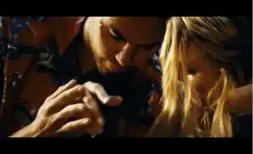

Mais alors, ça parle de quoi ?
Ben et Chon, respectivement docteur en botanique et ancien Navy SEAL, sont meilleurs amis. Ensemble, ils produisent de la marijuana ▬ la meilleure du pays ▬ avec leur entreprise montée grâce aux graines ramenées d’Afghanistan par Chon et les connaissances de Ben. Un jour, les deux hommes sont approchés par un cartel mexicain qui souhaite les racheter et ils refusent. En représailles, le cartel capture Ophélia ▬ surnommée O ▬ leur petite amie commune.
Distribution des rôles
Aaron Johnson (Kick-Ass, Avengers : Age Of Ultron) interprète Ben, le docteur en botanique idéaliste et pacifiste. Taylor Kitsch (X-Men Origins: Wolverine, Le Pacte du sang) campe son meilleur ami, Chon, ancien SEAL encore choqué des horreurs de la guerre dont il a été témoin. Enfin, Blake Lively (Gossip Girl, Adaline) prend le rôle d’Ophélia, leur petite amie.
“Les personnages principaux sont donc joués par trois acteurs confirmés, dont les visages sont bien loin de nous être inconnus.”
Quant aux personnages secondaires, leurs visages ne nous sont pas non plus étrangers. John Travolta (Grease, Pulp Fiction), Salma Hayek (Bandidas, Ugly Betty) et Benicio Del Toro (Usual Suspect, Marvel Cinematic Universe) sont parmi les acteurs les plus célèbres d’Hollywood.
La réception des critiques
Pochette DVD © Savages, 2012
Les critiques du film restent malgré tout partagées. Il obtient une moyenne de 52 % pour 186 critiques sur le site Rotten Tomatoes et un score de 59/100 sur le site Metacritic. Pour le Figaroscope, Savages est vu comme une "adaptation réussie du best-seller de Don Winslow" et comme un "trip’ des plus divertissants".
Pour certains, le film a permis à Oliver Stone de réaliser son meilleur film depuis longtemps ; tout comme le dit Le Nouvel Observateur. La critique de Studiociné Live reste sans aucun doute celle qui résume le mieux ce qu’en ont pensé les autres magazines. "Si Stone livre un récit à la tension permanente et au style impeccable, sa propension à explorer plusieurs pistes en parallèle rend impossible de connaître son sentiment profond sur le sujet. Vantant les vertus thérapeutiques du cannabis, décrivant la scène d’après les horreurs des cartels mexicains ou faisant le portrait désabusé d’un flic ripou… On pourra toujours louer l’absence d’angélisme de Savages et admirer le talent d’Aaron Johnson." Studiociné a donc octroyé au film la note de 3.75/5.
La bande annonce
© Caroline Chambre